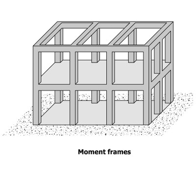
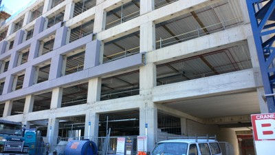
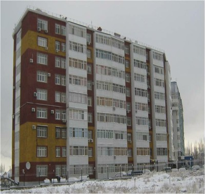

Moment frame [LFM]
This is a frame consisting of beams and columns, with strong and rigid beam-to-column connections. Includes frames with very slender walls, that do not resist a significant proportion of earthquake load. The frames can be single frames, or multiple bays repeated horizontally and/or vertically. These frames are not infilled with materials like masonry or concrete which would transform their behaviour to that of an infilled frame.

A simplified drawing of a moment-resisting frame structure (adapted from: A. Charleson, Seismic Design for Architects, Architectural Press 2008, p64 fig. 5.2). Beams must be present and not just slabs.

Partial section of a moment frame structure


Reinforced concrete frame building under construction, India (S. Brzev)

Reinforced concrete frame under construction, Thailand (C. Lilavivat)

Reinforced concrete buildings with a moment frame system have beams as a part of the floor system (Canada, S. Brzev)

Moment frame, concrete, New Zealand (A. Charleson)
A 1970s reinforced concrete frame, Wellington, New Zealand (J. Bothara)

Reinforced concrete frame building, Kyrgyzstan (K. Kanbolotov)